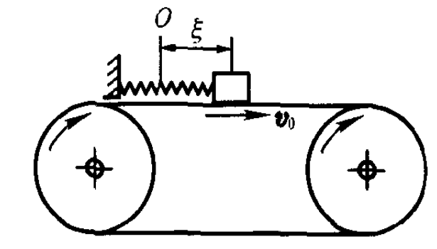
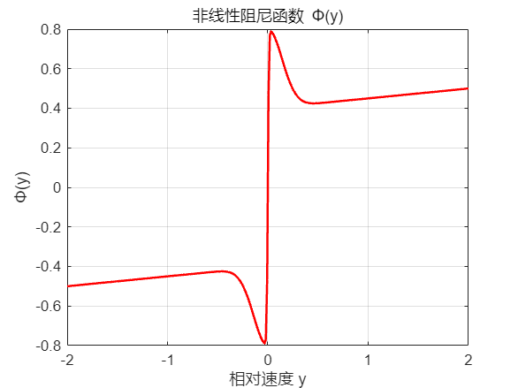
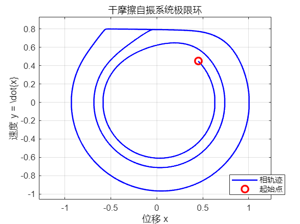
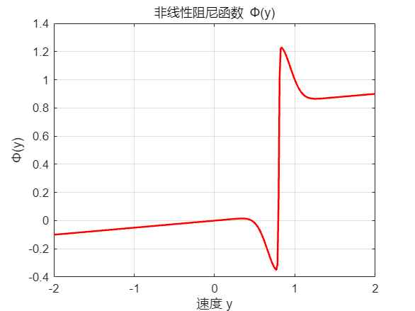
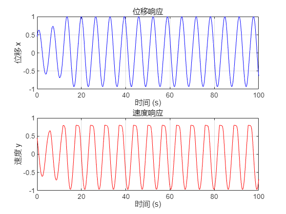

干摩擦自振与极限环——从理论到MATLAB仿真
1 引言
你是否注意过，提琴弓子摩擦琴弦能发出悠扬乐音，而推门时轴承却会发出刺耳的“吱嘎”声？这两种现象背后，其实隐藏着同一个物理机理——干摩擦自激振动。
在机械工程中，这类自振常表现为进给机构低速爬行、机床车刀切削颤振、制动器啸叫等有害现象，会大幅降低加工精度、加剧零部件磨损，严重时直接缩短设备服役寿命。
2 物理模型与数学描述
2.1 系统构成
选取经典滑块-弹簧-匀速传送带单自由度动力学模型：
质量为 $m$ 的滑块通过刚度 $k$ 的弹簧连接固定端，滑块放置在以恒定速度 $v_0$ 匀速运动的传送带上；滑块与传送带间存在非线性干摩擦力 $\varphi(v)$，摩擦力由滑块与传送带的相对速度决定。
定义 $\xi$ 为弹簧伸长量，则滑块与传送带的相对速度：

2.2 干摩擦力非线性特性
干摩擦力随相对速度变化具备典型Stribeck特征：
- 相对速度为0时，摩擦力达到最大静摩擦力 $F_s$；
- 滑块发生相对滑动瞬间，摩擦力骤降为库仑滑动摩擦力 $F_c$；
- 随着相对速度继续增大，摩擦力受粘性阻尼作用缓慢上升。
零速度附近摩擦力负斜率特性是干摩擦系统产生自激振动的核心能量来源，非线性阻尼会持续向系统输入振动能量。

2.3 系统动力学运动方程
为简化理论分析，对系统参数做归一化处理：$m=1，k=1$。
滑块受弹簧恢复力 $-\xi$、非线性干摩擦力 $\varphi(\dot{\xi}-v_0)$ 作用，由牛顿第二定律可得系统原始运动微分方程：
系统静平衡位置 $\xi_s$ 满足受力平衡条件：
引入坐标平移变换消除静平衡偏移：令 $x = \xi - \xi_s$，将平衡位置平移至坐标原点，定义等效非线性阻尼函数：
代入原方程得到以平衡位置为原点的标准振动方程：
阻尼函数特性：在 $y=0$（低速区间）附近 $\Phi(y)$ 斜率为负，系统表现为负阻尼，振动能量持续累积；当速度绝对值较大时，阻尼斜率由负转正，系统正向耗散振动能量。
图3：等效非线性阻尼函数 $\Phi(y)$ 特性曲线
3 相平面分析与稳定极限环机理
3.1 一阶状态相空间方程
令状态变量 $x_1=x，x_2=\dot{x}=y$，将二阶微分方程改写为一阶自治微分方程组：
相轨迹微分形式：
3.2 零斜率等倾线与平衡点稳定性
零斜率等倾线（$dy/dx=0$）满足：
- 原点附近等倾线分布在一、三象限，平衡点为不稳定焦点；微小扰动下相轨迹螺旋向外发散，振动幅值不断增大，负阻尼持续向系统注入能量；
- 当振动幅值提升至高速区间，系统切换为正阻尼，振动能量开始耗散；
- 能量注入速率与能量耗散速率动态平衡时，相轨迹不再发散或收敛，最终闭合形成稳定极限环。
图4：干摩擦系统相平面稳定极限环
3.3 极限环物理含义：粘-滑周期性振荡
极限环对应机械系统典型粘滞-滑动（Stick-Slip）周期性运动：
- 粘滞阶段：滑块与传送带无相对滑动，弹簧持续拉伸积蓄弹性势能；
- 滑动触发：弹簧弹力超过最大静摩擦力，滑块相对传送带发生滑移；
- 滑移减速阶段：库仑摩擦力作用下滑块速度降低，弹簧释放能量；
- 再次粘滞：滑块速度衰减至与传送带同步，再次进入粘滞状态，循环往复形成等幅自激振荡。
4 MATLAB数值仿真实现
4.1 Stribeck干摩擦数学模型
采用工程通用Stribeck摩擦模型表征干摩擦非线性特性，为规避符号函数 $\text{sgn}(v)$ 在零速度处不连续导致的数值奇异，使用 $\tanh(\alpha v)$ 平滑近似符号函数：
仿真参数配置表
| 参数 | 物理含义 | 取值 |
|---|---|---|
| $F_c$ | 库仑滑动摩擦力 | 0.4 |
| $F_s$ | 最大静摩擦力 | 0.8 |
| $v_s$ | Stribeck特征速度 | 0.2 |
| $\sigma$ | 粘性摩擦系数 | 0.05 |
| $\alpha$ | 零速度平滑系数 | 100 |
| $v_0$ | 传送带匀速运行速度 | 0.8 |
4.2 完整MATLAB仿真代码
1 | %% 单自由度干摩擦自振系统极限环 (教材模型) |
4.3 仿真结果分析
- 相平面极限环结果：系统从微小初始扰动出发，相轨迹由内向外螺旋发散，最终收敛至闭合曲线，形成全局稳定极限环。

非线性阻尼特性：$\Phi(y)$ 在零速度附近斜率为负，负阻尼持续激励系统振动；高速区间阻尼转正，限制振幅无限增大，能量动态平衡是极限环产生的根本原因。

时域响应特性：位移、速度时序曲线经过短暂过渡过程后变为等幅周期振荡，无衰减、无发散，对应机械结构持续低频自激振动。
